Modelica.Mechanics.Translational.Sensors.AccSensor
Modelica.Mechanics.Translational.Sensors.AccSensor
This package contains ideal sensor components that provide the connector variables as signals for further processing with the Modelica.Blocks library.
Extends from Modelica.Icons.SensorsPackage (Icon for packages containing sensors).
| Name | Description |
|---|---|
| 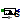 PositionSensor | Ideal sensor to measure the absolute position |
| 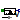 SpeedSensor | Ideal sensor to measure the absolute velocity |
| 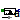 AccSensor | Ideal sensor to measure the absolute acceleration |
| 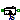 RelPositionSensor | Ideal sensor to measure the relative position |
| 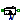 RelSpeedSensor | Ideal sensor to measure the relative speed |
| 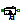 RelAccSensor | Ideal sensor to measure the relative acceleration |
| 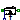 ForceSensor | Ideal sensor to measure the force between two flanges |
| 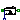 PowerSensor | Ideal sensor to measure the power between two flanges (= flange_a.f*der(flange_a.s)) |
Measures the absolute position s of a flange in an ideal way and provides the result as output signals (to be further processed with blocks of the Modelica.Blocks library).
Extends from Translational.Interfaces.PartialAbsoluteSensor (Device to measure a single absolute flange variable).
| Type | Name | Description |
|---|---|---|
| Flange_a | flange | Flange to be measured (flange axis directed in to cut plane, e. g. from left to right) |
| output RealOutput | s | Absolute position of flange |
model PositionSensor "Ideal sensor to measure the absolute position" extends Translational.Interfaces.PartialAbsoluteSensor;Modelica.Blocks.Interfaces.RealOutput s "Absolute position of flange"; equation s = flange.s;end PositionSensor;
Measures the absolute velocity v of a flange in an ideal way and provides the result as output signals (to be further processed with blocks of the Modelica.Blocks library).
Extends from Translational.Interfaces.PartialAbsoluteSensor (Device to measure a single absolute flange variable).
| Type | Name | Description |
|---|---|---|
| Flange_a | flange | Flange to be measured (flange axis directed in to cut plane, e. g. from left to right) |
| output RealOutput | v | Absolute velocity of flange as output signal |
model SpeedSensor "Ideal sensor to measure the absolute velocity" extends Translational.Interfaces.PartialAbsoluteSensor;Modelica.Blocks.Interfaces.RealOutput v "Absolute velocity of flange as output signal"; equation v = der(flange.s);end SpeedSensor;
Modelica.Mechanics.Translational.Sensors.AccSensor
Measures the absolute acceleration a of a flange in an ideal way and provides the result as output signals (to be further processed with blocks of the Modelica.Blocks library).
Extends from Translational.Interfaces.PartialAbsoluteSensor (Device to measure a single absolute flange variable).
| Type | Name | Description |
|---|---|---|
| Flange_a | flange | Flange to be measured (flange axis directed in to cut plane, e. g. from left to right) |
| output RealOutput | a | Absolute acceleration of flange as output signal |
model AccSensor "Ideal sensor to measure the absolute acceleration" extends Translational.Interfaces.PartialAbsoluteSensor; SI.Velocity v "Absolute velocity of flange";Modelica.Blocks.Interfaces.RealOutput a "Absolute acceleration of flange as output signal"; equation v = der(flange.s); a = der(v);end AccSensor;
 Modelica.Mechanics.Translational.Sensors.RelPositionSensor
Modelica.Mechanics.Translational.Sensors.RelPositionSensor
Measures the relative position s of a flange in an ideal way and provides the result as output signals (to be further processed with blocks of the Modelica.Blocks library).
Extends from Translational.Interfaces.PartialRelativeSensor (Device to measure a single relative variable between two flanges).
| Type | Name | Description |
|---|---|---|
| Flange_a | flange_a | (left) driving flange (flange axis directed in to cut plane, e. g. from left to right) |
| Flange_b | flange_b | (right) driven flange (flange axis directed out of cut plane) |
| output RealOutput | s_rel | Distance between two flanges (= flange_b.s - flange_a.s) |
model RelPositionSensor "Ideal sensor to measure the relative position" extends Translational.Interfaces.PartialRelativeSensor;Modelica.Blocks.Interfaces.RealOutput s_rel "Distance between two flanges (= flange_b.s - flange_a.s)"; equation s_rel = flange_b.s - flange_a.s; 0 = flange_a.f;end RelPositionSensor;
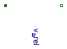
Measures the relative speed v of a flange in an ideal way and provides the result as output signals (to be further processed with blocks of the Modelica.Blocks library).
Extends from Translational.Interfaces.PartialRelativeSensor (Device to measure a single relative variable between two flanges).
| Type | Name | Description |
|---|---|---|
| Flange_a | flange_a | (left) driving flange (flange axis directed in to cut plane, e. g. from left to right) |
| Flange_b | flange_b | (right) driven flange (flange axis directed out of cut plane) |
| output RealOutput | v_rel | Relative velocity between two flanges (= der(flange_b.s) - der(flange_a.s)) |
model RelSpeedSensor "Ideal sensor to measure the relative speed"
extends Translational.Interfaces.PartialRelativeSensor;
SI.Position s_rel
"Distance between the two flanges (flange_b.s - flange_a.s)";
Modelica.Blocks.Interfaces.RealOutput v_rel
"Relative velocity between two flanges (= der(flange_b.s) - der(flange_a.s))";
equation
s_rel = flange_b.s - flange_a.s;
v_rel = der(s_rel);
0 = flange_a.f;
end RelSpeedSensor;
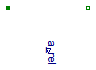
Measures the relative acceleration a of a flange in an ideal way and provides the result as output signals (to be further processed with blocks of the Modelica.Blocks library).
Extends from Translational.Interfaces.PartialRelativeSensor (Device to measure a single relative variable between two flanges).
| Type | Name | Description |
|---|---|---|
| Flange_a | flange_a | (left) driving flange (flange axis directed in to cut plane, e. g. from left to right) |
| Flange_b | flange_b | (right) driven flange (flange axis directed out of cut plane) |
| output RealOutput | a_rel | Relative acceleration between two flanges (= der(v_rel)) |
model RelAccSensor
"Ideal sensor to measure the relative acceleration"
extends Translational.Interfaces.PartialRelativeSensor;
SI.Position s_rel
"Distance between the two flanges (flange_b.s - flange_a.s)";
SI.Velocity v_rel
"Relative velocity between the two flanges (der(flange_b.s) - der(flange_a.s))";
Modelica.Blocks.Interfaces.RealOutput a_rel
"Relative acceleration between two flanges (= der(v_rel))";
equation
s_rel = flange_b.s - flange_a.s;
v_rel = der(s_rel);
a_rel = der(v_rel);
0 = flange_a.f;
end RelAccSensor;
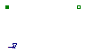
Measures the cut-force between two flanges in an ideal way and provides the result as output signal (to be further processed with blocks of the Modelica.Blocks library).
Extends from Translational.Interfaces.PartialRelativeSensor (Device to measure a single relative variable between two flanges).
| Type | Name | Description |
|---|---|---|
| Flange_a | flange_a | (left) driving flange (flange axis directed in to cut plane, e. g. from left to right) |
| Flange_b | flange_b | (right) driven flange (flange axis directed out of cut plane) |
| output RealOutput | f | Force in flange_a and flange_b (f = flange_a.f = -flange_b.f) |
model ForceSensor "Ideal sensor to measure the force between two flanges" extends Translational.Interfaces.PartialRelativeSensor;Modelica.Blocks.Interfaces.RealOutput f "Force in flange_a and flange_b (f = flange_a.f = -flange_b.f)"; equation flange_a.s = flange_b.s; flange_a.f = f;end ForceSensor;
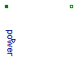
Measures the power between two flanges in an ideal way and provides the result as output signal power (to be further processed with blocks of the Modelica.Blocks library).
Extends from Translational.Interfaces.PartialRelativeSensor (Device to measure a single relative variable between two flanges).
| Type | Name | Description |
|---|---|---|
| Flange_a | flange_a | (left) driving flange (flange axis directed in to cut plane, e. g. from left to right) |
| Flange_b | flange_b | (right) driven flange (flange axis directed out of cut plane) |
| output RealOutput | power | Power in flange flange_a |
model PowerSensor "Ideal sensor to measure the power between two flanges (= flange_a.f*der(flange_a.s))" extends Translational.Interfaces.PartialRelativeSensor;Modelica.Blocks.Interfaces.RealOutput power "Power in flange flange_a"; equation flange_a.s = flange_b.s; power = flange_a.f*der(flange_a.s);end PowerSensor;